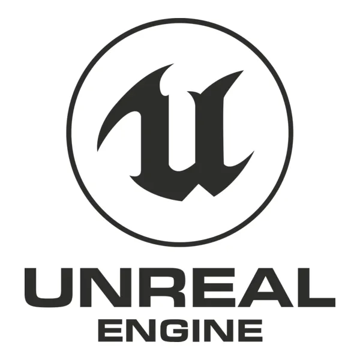
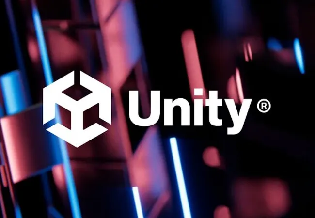
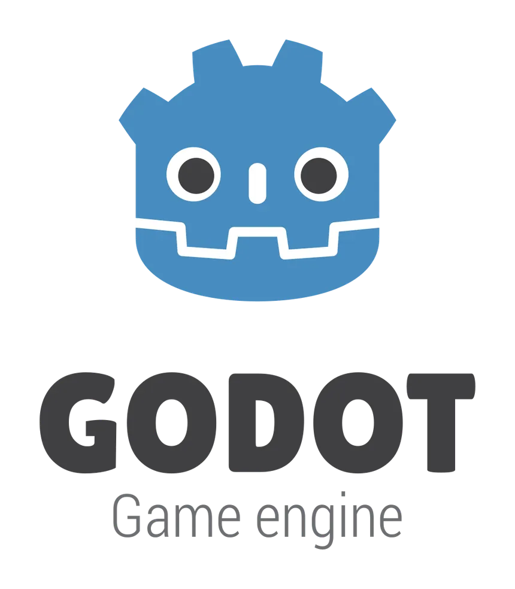

Unreal Engine
Creado por Epic Games. Es conocido por sus gráficos de alta fidelidad y es el estándar para juegos AAA (grandes presupuestos). Usa su propio lenguaje visual llamado Blueprints o C++.
Un motor gráfico es el software base que permite a los desarrolladores crear un videojuego sin tener que programar todo desde cero. Estas son las herramientas más importantes de la industria actual.

Creado por Epic Games. Es conocido por sus gráficos de alta fidelidad y es el estándar para juegos AAA (grandes presupuestos). Usa su propio lenguaje visual llamado Blueprints o C++.

El motor más popular para juegos independientes (Indies) y móviles. Es muy versátil, fácil de aprender y utiliza C# como lenguaje principal. Se estima que más del 50% de los juegos móviles usan Unity.

La alternativa de código abierto (Open Source) y gratuita. Está ganando mucha tracción por su ligereza, su sistema de nodos y su lenguaje de programación propio llamado GDScript (similar a Python).